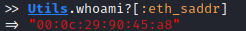
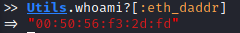

Forge TCP packet
TCPPacket class
(https://github.com/todb/packetfu/blob/master/lib/packetfu/protos/tcp.rb)require "packetfu"
include PacketFu

To send an TCP packet you need to set the following fields
◇ eth_saddr → source MAC address
▪ Check Utils.whoami?[:eth_saddr]

◇ eth_daddr → destination MAC address
▪ destination outside our local network → MAC address of the default gateway
- Check Utils.whoami?[:eth_daddr]

▪ destination inside of the local network → MAC address of the destination
- Utils.arp("[IP_Address_destination]")
◇ ip_daddr → destination address
◇ ip_saddr → source address
◇ tcp_sport → source TCP port
◇ tcp_dport → destination TCP port
◇ tcp_flags.syn → Only if we want to do a SYN scan (nmap -sS) instead of a normal
t= TCPPacket.new
t.eth_saddr="00:0c:29:90:45:a8" #source MAC address
t.eth_daddr="00:0c:29:f3:2e:04" #destination MAC address
t.ip_saddr="192.168.3.136" #ip source address
t.ip_daddr= "192.168.3.137" #ip destination address
t.tcp_sport=5000 #source TCP port
t.tcp_dport=80 #destination TCP port
t.tcp_flags.syn=1 #Only if we want to do a SYN scan
t.recalc #use first always recalc, in order to calculate the
# checksum of the modified packet
t.to_w #To send the packet

Set our parameters automatically (no spoofing)
WARNING if the destination is in the local network: this method will set the destination MAC address(eth_daddr/eth_dst) at the default gateway, but if the target is inside the local network, we need to set directly the MAC address of the target and not of the default gateway.
• eth_saddr → source MAC address
• eth_daddr → destination MAC address
• ip_saddr → ip source address
with this command:
t=TCPPacket.new(:config => Utils.whoami?)
TCP SYN scan: port scanner that avoids finalizing the tcp 3-way handshake. Like when we use nmap -sS instead of nmap -sT
◇ TCP SYN scan


◇ TCP Connect Scan